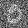
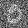
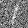
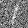
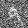
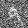

Fun With Diffusion Models!
Part A: The Power of Diffusion Models!
In part A you will play around with diffusion models, implement diffusion sampling loops, and use them for other tasks such as inpainting and creating optical illusions.
0: Setup
- Come up with some interesting text prompts and generate their embeddings.
- Choose 3 of your prompts to generate images and display the caption and the output of the model. Reflect on the quality of the outputs and their relationships to the text prompts. Make sure to try at least 2 different num_inference_steps values.
- Report the random seed that you're using here. You should use the same seed all subsequent parts.
My seed: 100
Prompts:
"an oil painting of people around a campfire"
"a rocket ship"
"a lithograph of waterfalls"

Higher num_inference_steps values often yield slightly better quality, characterized by richer detail. However, they can also produce elements that are physically unrealistic. For these specific sets, I actually prefer the images generated at 20 steps.
1.1: Implementing the Forward Process
- Implement the
noisy_im = forward(im, t)function. - Show the Campanile at noise level [250, 500, 750].

I implemented the forward diffusion process by scaling the clean image with the square root of the cumulative product of alphas at timestep t and adding Gaussian noise weighted by the corresponding variance term. This simulates the progressive corruption of the image over time.
1.2 Classical Denoising
- For each of the 3 noisy Campanile images from the previous part, show your best Gaussian-denoised version side by side.
In this part, I generated noisy images at timesteps 250, 500, and 750 using the forward diffusion process and applied a Gaussian blur as a simple, classical denoising method. However, the results were poor—while the blur slightly smoothed the noise, it also destroyed fine details and failed to restore meaningful structure. This shows that traditional image filters are inadequate for reversing diffusion noise.
1.3 One-Step Denoising
- For the 3 noisy images from 1.2 (t = [250, 500, 750]):
- Use your forward function to add noise to your Campanile.
- Estimate the noise in the new noisy image, by passing it through stage_1.unet
- Remove the noise from the noisy image to obtain an estimate of the original image.
- Visualize the original image, the noisy image, and the estimate of the original image

I added one-step denoising with the UNet: for each t (250, 500, 750) I first noised the image, then used the UNet with the null/unconditional prompt embedding to predict ε and computed
^x0 = (xt - √(1 - āt) ε) / √(āt).
In practice, this learned denoiser clearly outperforms the classical Gaussian blur, but a single step only partially recovers structure—it works reasonably well at t = 250 and quickly breaks down by t = 750.
When t > 500, the one-step reconstruction deviates noticeably from the original—details vanish.
1.4 Iterative Denoising
- Using i_start = 10:
- Create strided_timesteps: a list of monotonically decreasing timesteps, starting at 990, with a stride of 30, eventually reaching 0. Also initialize the timesteps using the function stage_1.scheduler.set_timesteps(timesteps=strided_timesteps)
- Complete the iterative_denoise function
- Show the noisy Campanile every 5th loop of denoising (it should gradually become less noisy)
- Show the final predicted clean image, using iterative denoising
- Show the predicted clean image using only a single denoising step, as was done in the previous part. This should look much worse.
- Show the predicted clean image using gaussian blurring, as was done in part 1.2.
In this implementation, I first created a strided sequence of timesteps and built an iterative denoising loop that gradually refines the noisy image using the UNet’s noise and variance predictions.
At each step, I computed x0 and the next image xt′ via the DDPM update equation, adding the learned variance for stochasticity.
I also implemented a one-step denoising and a Gaussian blur baseline for comparison.
Overall, the iterative reverse diffusion reconstructs the image more faithfully than the single-step or classical filtering alternatives.
1.5 Diffusion Model Sampling
- Show 5 sampled images.
1.6 Classifier Free Guidance
- Implement the iterative_denoise_cfg function
- Show 5 images of "a high quality photo" with a CFG scale of 7. Now this prompt becomes a condition (but fairly weak) to generate conditional noise! You will use your customized prompts as stronger conditions in part 1.7 - part 1.9.
The point that impresses me most is that the shadow of the mountain in the water in sample 2 is accurate!
1.7 Image-to-image Translation
- Edits of the Campanile image, using the given prompt at noise levels [1, 3, 5, 7, 10, 20] with the conditional text prompt "a high quality photo"
- Edits of 2 of your own test images, using the same procedure.


1.7.1 Editing Hand-Drawn and Web Images
- 1 image from the web of your choice, edited using the above method for noise levels [1, 3, 5, 7, 10, 20] (and whatever additional noise levels you want)
- 2 hand drawn images, edited using the above method for noise levels [1, 3, 5, 7, 10, 20] (and whatever additional noise levels you want)

1.7.2 Inpainting
- A properly implemented inpaint function
- The Campanile inpainted (feel free to use your own mask)
- 2 of your own images edited (come up with your own mask)
1.7.3 Text-Conditional Image-to-image Translation
- Edits of the Campanile, using the given prompt at noise levels [1, 3, 5, 7, 10, 20]
- Edits of 2 of your own test images, using the same procedure
Prompt: "an oil painting of people around a campfire"
1.8 Visual Anagrams
- Correctly implemented visual_anagrams function
- 2 illusions of your choice that change appearance when you flip it upside down
1.9 Hybrid Images
- Correctly implemented make_hybrids function
- 2 hybrid images of your choosing
Low Frequency Prompt: "a lithograph of waterfalls"
High Frequency Prompt: "an oil painting of people around a campfire"
Low Frequency Prompt: "a photo of a dog"
High Frequency Prompt: "a man wearing a hat"
Part B: Flow Matching from Scratch!
You will train your own flow matching model on MNIST. In this part, you will build and train a UNet, which is more complex than the MLP you implemented in the NeRF project.
Part 1: Training a Single-Step Denoising UNet
1.1 Implementing the UNet
In this project, we implement the denoiser as a UNet. It consists of a few downsampling and upsampling blocks with skip connections.

The diagram above uses a number of standard tensor operations defined as follows:

1.2 Using the UNet to Train a Denoiser
- A visualization of the noising process using [0.0, 0.2, 0.4, 0.5, 0.6, 0.8, 1.0].
I added Gaussian noise with different standard deviations (σ) to an MNIST image to visualize how increasing noise progressively degrades image quality. This helps illustrate the effect of the noise level on data corruption in the diffusion process.
1.2.1 Training
- A training loss curve plot every few iterations during the whole training process of σ=0.5.
- Sample results on the test set with noise level 0.5 after the first and the 5-th epoch.
Training Loss Curve:
Sample Results:


 

 

 

1.2.2 Out-of-Distribution Testing
- Sample results on the test set with out-of-distribution noise levels after the model is trained. Keep the same image and vary σ = [0.0, 0.2, 0.4, 0.5, 0.6, 0.8, 1.0].
Sample results:


1.2.3 Denoising Pure Noise
- A training loss curve plot every few iterations during the whole training process that denoises pure noise.
- Sample results on pure noise after the first and the 5-th epoch.
- A brief description of the patterns observed in the generated outputs and explanations for why they may exist.
Training Loss Curve:
Sample Results:
The generated outputs from the pure-noise denoising model tend to appear blurry, low-contrast, and look like all the digits stacked together. This happens because the model is trained to map random Gaussian noise directly to clean images without any conditioning or timestep information—essentially an ill-posed task. Since there is no correlation between the noise input and the target image, the network learns to output the dataset’s mean structure or smooth patterns, minimizing MSE loss but failing to produce meaningful reconstructions.
Part 2: Training a Flow Matching Model
2.1 Adding Time Conditioning to UNet
Time-Conditioned UNet Architecture:

This uses a new operator called FCBlock (fully-connected block) which we use to inject the conditioning signal into the UNet:

2.2 Training the UNet
- A training loss curve plot for the time-conditioned UNet over the whole training process.
Training Loss Curve:
2.3 Sampling from the UNet
- Sampling results from the time-conditioned UNet for 1, 5, and 10 epochs. The results should not be perfect, but reasonably good.
Sampling Results:
2.4 Adding Class-Conditioning to UNet
I extended the UNet architecture to incorporate class conditioning. Each digit class (0–9) is encoded as a one-hot vector and passed through two fully connected blocks to generate class embeddings. During training, I applied classifier-free guidance by randomly masking out a portion of the class information, allowing the model to learn both conditional and unconditional behaviors.
The conditioning signals are injected into the network at key points as follows:
unflatten = c1 × unflatten + t1
up1 = c2 × up1 + t2
2.5 Training the UNet
- A training loss curve plot for the class-conditioned UNet over the whole training process.
Training Loss Curve:
2.6 Sampling from the UNet
- Sampling results from the class-conditioned UNet for 1, 5, and 10 epochs. Class-conditioning lets us converge faster, hence why we only train for 10 epochs. Generate 4 instances of each digit as shown above.
- Can we get rid of the annoying learning rate scheduler? Simplicity is the best. Please try to maintain the same performance after removing the exponential learning rate scheduler. Show your visualization after training without the scheduler and provide a description of what you did to compensate for the loss of the scheduler.
Sampling Results(scheduler):
To test "Can we get rid of the annoying learning rate scheduler?" I remove the scheduler and reduce the learning rate a bit.(1e-2 -> 3e-3) And use torch.nn.utils.clip_grad_norm_(cunet_ns.parameters(), 1.0) to ramain the training stable.
Sampling Results(no scheduler):